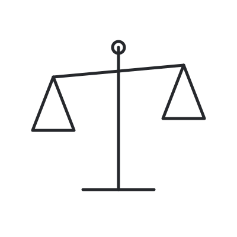
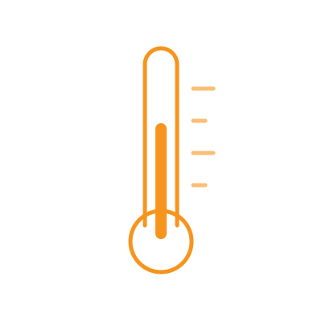
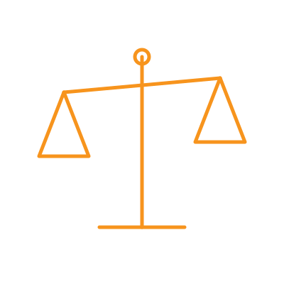

MidChain DeFi Conference
Metric-Based Voting
Designing Rules for Ecosystem Resource Allocation
Nimrod Talmon · joint work with Eyal Briman
Ben-Gurion University of the Negev · October 26, 2026

A pot of money,
many projects.
Who gets what?
Optimism Retro Funding
Over $100M in four rounds, and a new voting rule every round
Quadratic→
Mean→
Quorum median→
Capped median
Smells funny…
Briman, Talmon, Kreitenweis, Idrees 2025
Which rule is the right one?
This is what social choice studies

We looked at Optimism's rules
FoundThe median rules invite strategic voting
SuggestedMoving phantoms: artificial voters so that lying never pays
Freeman, Pennock, Peters, Wortman Vaughan 2019 · Briman, Talmon, Kreitenweis, Idrees 2025
Round 4: vote on metrics, not on projects
108voters
16metrics
230projects
10MOP
Voters weighted metrics; onchain data scored the projects
Not only crypto
OECD Better Life Index
Rank countries: weight 11 topics
ERC
Rank grants: ambition, feasibility, PI
The model
Metric-based voting
How it works
How it works
How it works
How it works
How it works
What a ballot looks like
From ballots to one weight: mean or median?
From ballots to one weight: mean or median?
Both are used in practice
Median
Optimism; social choice
We compare them on
lyinghitting a targetcopying metrics
Greco et al. 2019 · Optimism Retro Funding 4, 2024
Strategic voting
Can a voter gain by lying?
The office thermostat

Cat says 32°: the mean moves
Cat says 32°: the median does not
So a median per metric is safe too?
A project worth 1 on Planet and on Energy
A project worth 1 on Planet and on Energy
Why
Ann cares about the score, not about each weight
She lost on Planet, so she bought it back on Energy
No sensible metric-by-metric rule is safe from this

Lying can pay.
How hard is it to find the lie?
Searching for the right lie
One smooth region: easy to search
Scattered islands: a hard puzzle
The platform's choices
Duplicate metrics
Round 4: gas fees, and also log gas fees
Three voters, one Fees metric
The median doubled Fees
Add a copy. Same opinions.
The median doubled Fees
Four levers, four ballot types
Which rule is harder to steer depends on the ballot
Metric-based voting is effective,
but not easy to do right
MidChain DeFi Conference
Metric-Based Voting
Designing Rules for Ecosystem Resource Allocation
Nimrod Talmon · joint work with Eyal Briman
Ben-Gurion University of the Negev · October 26, 2026